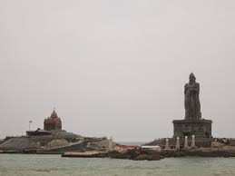

OUR TRAVEL BLOGS

Goa is the perfect mix of natural beauty, lively nightlife, and tropical environs. Check out our Goa blog portal, where you will find all the essential information to help you plan an awesome sauce vacation to the party-state. From the best tourist attractions to plush resorts, this collection of travel blogs on Goa will make your trip fun and hassle-free. Discover the tropical state's best-kept secrets in these blogs. Each Goa travel blog showcase essential information such as the best time to visit, how to reach, and other nitty-gritty tips and information for you to enjoy your vacation fully. We have treated every Goa tour blog as a platform to showcase our love and fervor for India’s favorite party destination. Don't limit yourself to crowded beaches and attractions when you can explore new and offbeat places with the help of these Goa trip blogs. Whether it's North Goa or South Goa, these Goa travel blogs have got you covered for both parts of the Portuguese corner of India. Pin your favorite articles and feel free to share on your social media channels to kick start everyone's wanderlust to Goa. Watch out our this space for the latest updates and new exciting information every day.

The Kashmiri doesn’t care whose flag he follows, whose anthem he sounds. As long as the Kashmiri gets to row his shikara, herd his sheep, temper his willow bats, grow his apples and light his kangri in peace, what’s an India, what is a Pakistan.
It has been an illuminating first day in Kashmir. The flight from Delhi spelt its own episodes, but that’s another, rather insignificant, story. A delay caused due to fog meant that we touched down at Srinagar Airport an hour behind schedule.
But enough of that; let the story begin.


‘The family that travels together stays together’ as the new experiences captured after crossing your geographical boundaries gives memories of a lifetime. With similar intentions, Pushpkar Bharadwaj from Faridabad went for an enthralling holiday with his ménage to religious and illuminating places of Tamil Nadu, that’s, Madurai, Rameshwaram, and Kanyakumari. Pushpkar’s expedition with his family was amazing as their craving to explore the enormous temples and other attractions of South India was well-nurtured in these popular cities of Tamil Nadu with a plethora of dynamic experiences. Read more to know Pushpkar’s Kanyakumari Travel Experience in his words that will surely help you in planning the next enthralling visit to this beautiful destination!
I was quite interested in exploring the famous Vivekananda Rock Memorial in Kanyakumari and capture the panoramic images of the majestic Indian Ocean due to which, I was allured to visit this southernmost city of Indian peninsular. Kanyakumari is located in proximity to the other two popular destinations, that’s, Rameshwaram and Madurai. We decided to explore three destinations on this holiday. After searching numerous online packages, I booked our trip with TravelTriangle and got the itinerary customized according to our preferences.
Our Kanyakumari trip made us encounter numerous delightful memories but I am sharing the best ones here. Our escapades in these beautiful cities of Tamil Nadu will surely assist you in choosing the best attractions for your Kanyakumari trip.

Zillions of superlatives put together won’t exactly define the beauty called Rajasthan. Located in northwestern part of India, Rajasthan is a geographically diverse region that can fascinate you every moment. See colour runs riot in the land of the Kings, battle-scarred forts, places of grandeur steeped in spirituality and history.
A journey to this remarkable place is on every traveller’s wish list. But it needs to be planned with care and imagination.
This is some place that truly depicts the composite essence of India and its celebration of life itself. Walk through the ancient alleyways; treat your senses with its celebrated art forms and tempting flavoursome food.
But the most enticing part of Rajasthan is the traditional lifestyle, festivity and welcoming people, who always carry a bright, wide smile on their face.
A journey to this remarkable place is on every traveller’s wish list. But it needs to be planned with care and imagination.
The climate of Rajasthan can be hot and scorching during the summers. There is nothing like best time to visit Rajasthan, than the months of Octobers and March, when the weather is often cool and pleasant. The chilled evenings these times means an opportunity to sit beside bonfires, sample local food and enjoy traditional arts forms.

.jpeg)

Dubai is unlike anywhere else on the planet. With its bold architecture and audacious style, the United Arab Emirates’ largest city is a distinct fusion of its Bedouin heritage and an ultramodern style all its own. Dubai doesn’t just live up to its reputation; it will completely exceed your expectations. Explore the glitz and glam, and then uncover the ancient traditions of this multifaceted city. Here's my ultimate Dubai travel guide!
Language: While Arabic is the UAE’s official language, English is the language of business and is spoken by almost everyone in Dubai.
Currency: Dirham (Dhs). The exchange rate as of the time this article was written is Dhs 3.67 to USD 1.
Credit Cards and Banks: Cash is still king here. While most places accept credit cards, it’s best to always carry small change.
Climate: Summers are extremely hot in Dubai. Daytime temperatures are sometimes over 106 degrees while nights rarely fall below eighty-eight degrees. Winters are much more comfortable with temps between sixty and seventy-five degrees.
Good to Know: The minimum drinking age is twenty-one and there are areas where photography is prohibited, so watch out for signs.
Dress Code: It can get very hot in Dubai, but you should be aware of keeping your clothes more on the conservative side. Be sure to pack light layers with a few long-sleeves and full length bottoms.
.jpeg)
Bali is a favorite destination for many people around the world and it’s easy to see why! From its list of unending idyllic beaches, captivating spiritual energy, terraced rice fields and exotic sunsets. There is so much to see and experience on this magnificent island paradise!
Going to Bali feels like going on a never-ending adventure – there is an activity to suit every soul! Experience surfing, yoga, meditation, trekking, delicious food or amazing nightlife. Certain areas of Bali have been influenced by tourism, with hubs of cute cafes, hip bars, and vegan restaurants. Other areas are still quite remote, maintaining their uniquely Balinese beauty and charm.
.jpeg)